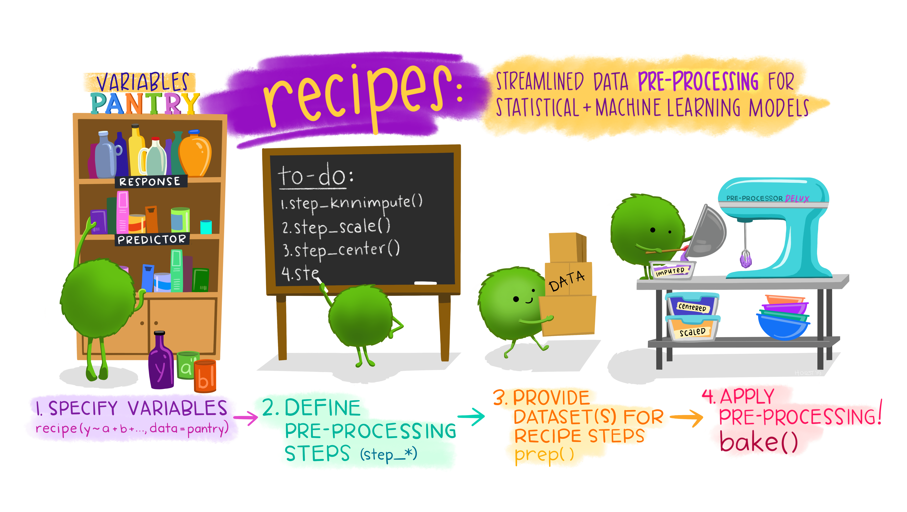
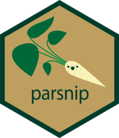
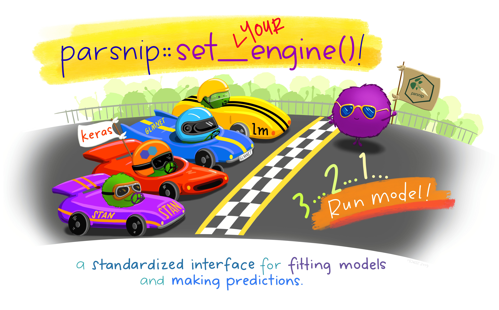
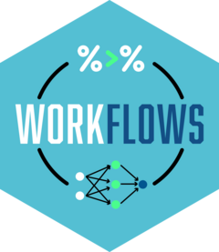

1. Background
R에는 다양한 머신러닝 모델링 패키지와 통계 패키지들이 존재합니다. 다양한 분야의 연구자들이 R을 활용해서 새로운 통계 모델을 만들어내기도 하죠. 새롭게 만든 모델을 더 다듬어서 새로운 패키지를 배포할 수도 있고요. 오픈소스 R의 강력한 힘이라고 할 수 있겠습니다.
하지만 배포되는 패키지마다 패키지 제작자 나름의 스타일을 담다 보니 이용자 입장에서는 신경 쓸 문제가 있습니다. 바로 모델링 문법의 일관성 문제입니다. 어느 패키지를 사용할 때는 수식으로 모델을 입력해야 하고요, 또 어느 때에는 수식 없이도 충분히 모델링을 굴릴 수 있습니다.
tidymodels과 함께라면 이 문제를 해결할 수 있습니다. tidymodels은 tidyverse 원리를 사용한 모델링 및 머신러닝 패키지 모음입니다. R 세상에 넘쳐나는 다양한 모델링 인터페이스를 매끄럽게 만들기 위해 tidymodels은 tidyverse의 기본 철학을 바탕으로 깔끔한 프레임워크를 만들었습니다. tidyverse의 파이프를 사용한 코드 구성도 tidymodels에서 가능하죠. 적용 범위도 광범위합니다. 고전적인 통계 방법부터 머신러닝 기법까지 싹 다 지원합니다.
2. Tidymodels package
 tidymodels 패키지는 이렇게나 많습니다. 물론 이걸 다 쓰는 건 아니고요, 모델링 과정에서 필요한 패키지들을 불러와서 때에 맞춰서 골라 쓰면 됩니다. 그중 코어 패키지라고 할 수 있는 패키지는 8개 정도로 정리됩니다. 아래 소개된 8가지 패키지를 바탕으로 모델링을 진행하면서 tidymodels의 깔끔한 인터페이스를 경험해 보겠습니다.
tidymodels 패키지는 이렇게나 많습니다. 물론 이걸 다 쓰는 건 아니고요, 모델링 과정에서 필요한 패키지들을 불러와서 때에 맞춰서 골라 쓰면 됩니다. 그중 코어 패키지라고 할 수 있는 패키지는 8개 정도로 정리됩니다. 아래 소개된 8가지 패키지를 바탕으로 모델링을 진행하면서 tidymodels의 깔끔한 인터페이스를 경험해 보겠습니다.
| No | Package | Summary |
|---|---|---|
| 1 | rsample | 데이터를 분할하고 리샘플링할 때 사용하는 패키지 |
| 2 | recipes | Feature Engineering을 위한 데이터 전처리 패키지 |
| 3 | parsnip | 통합 모델링 인터페이스를 제공해주는 패키지 |
| 4 | workflows | 전처리, 모델링, 후처리를 결합해주는 패키지 |
| 5 | tune | 전처리 단계의 하이퍼파라미터 최적화 및 튜닝 패키지 |
| 6 | yardstick | 성능 메트릭을 통한 모델 평가 패키지 |
| 7 | broom | 통계 정보를 tidy하게 출력해주는 패키지 |
| 8 | dials | 튜닝 매개변수 패키지 |
3. The Whole Game
모델링에 활용할 데이터는 tidytuesdayR 패키지에서 제공하는 히말라야 등반 원정 데이터입니다. tidytuesday는 매주 화요일마다 진행되는 일종의 시각화 경진 프로젝트인데요, 화요일마다 공개되는 데이터 셋을 가지고 분석을 해보고, 나름의 시각화를 해 보는 거죠. 결과물은 개인 SNS에 업로드하면 끝입니다.
2020년 9월 22일에 공개되었던 히말라야 등반 원정 데이터에는 네팔 히말라야를 등반한 모든 원정대의 기록이 담겨 있습니다. 1905년부터 2019년 봄까지 네팔의 465개 이상의 주요 봉우리에 대한 모든 원정이 담겨 있죠.
tidytuesdayR 패키지의 tt_load() 함수를 이용하면 바로 불러올 수 있지만, Github API 요청 한계를 넘길 경우 제대로 로드가 되지 않을 수 있습니다. 이런 경우엔 tidytuesdayR github에 들어가면 원 데이터를 받을 수 있습니다😄
총 3개의 데이터셋이 있습니다.
- peaks.csv : 히말라야 산막의 봉우리 데이터
- members.csv : 히말라야 탐험 원정대 구성원 데이터
- expeditions.csv : 해당 기간동안 수행된 탐험 데이터
우선 탐험 데이터를 조금 더 자세히 살펴보겠습니다.
library(tidyverse)
expeditions |>
slice_head(n = 5)# A tibble: 5 × 16
expedition_id peak_id peak_name year season basecamp_date highpoint_date
<chr> <chr> <chr> <dbl> <chr> <date> <date>
1 ANN260101 ANN2 Annapurna II 1960 Spring 1960-03-15 1960-05-17
2 ANN269301 ANN2 Annapurna II 1969 Autumn 1969-09-25 1969-10-22
3 ANN273101 ANN2 Annapurna II 1973 Spring 1973-03-16 1973-05-06
4 ANN278301 ANN2 Annapurna II 1978 Autumn 1978-09-08 1978-10-02
5 ANN279301 ANN2 Annapurna II 1979 Autumn NA 1979-10-18
# ℹ 9 more variables: termination_date <date>, termination_reason <chr>,
# highpoint_metres <dbl>, members <dbl>, member_deaths <dbl>,
# hired_staff <dbl>, hired_staff_deaths <dbl>, oxygen_used <lgl>,
# trekking_agency <chr>탐험이 언제, 어디서 이뤄졌는지, 참여한 구성원은 얼마나 되는지, 사망했는지 등의 정보가 담겨 있습니다. 다음으로 원정대 정보를 살펴보겠습니다. skimr 패키지의 skim 함수를 이용해 각 변수별 기술 통계량을 조회해 보겠습니다.
| Name | members |
| Number of rows | 76519 |
| Number of columns | 21 |
| _______________________ | |
| Column type frequency: | |
| character | 10 |
| logical | 6 |
| numeric | 5 |
| ________________________ | |
| Group variables | None |
Variable type: character
| skim_variable | n_missing | complete_rate | min | max | empty | n_unique | whitespace |
|---|---|---|---|---|---|---|---|
| expedition_id | 0 | 1.00 | 9 | 9 | 0 | 10350 | 0 |
| member_id | 0 | 1.00 | 12 | 12 | 0 | 76518 | 0 |
| peak_id | 0 | 1.00 | 4 | 4 | 0 | 391 | 0 |
| peak_name | 15 | 1.00 | 4 | 25 | 0 | 390 | 0 |
| season | 0 | 1.00 | 6 | 7 | 0 | 5 | 0 |
| sex | 2 | 1.00 | 1 | 1 | 0 | 2 | 0 |
| citizenship | 10 | 1.00 | 2 | 23 | 0 | 212 | 0 |
| expedition_role | 21 | 1.00 | 4 | 25 | 0 | 524 | 0 |
| death_cause | 75413 | 0.01 | 3 | 27 | 0 | 12 | 0 |
| injury_type | 74807 | 0.02 | 3 | 27 | 0 | 11 | 0 |
Variable type: logical
| skim_variable | n_missing | complete_rate | mean | count |
|---|---|---|---|---|
| hired | 0 | 1 | 0.21 | FAL: 60788, TRU: 15731 |
| success | 0 | 1 | 0.38 | FAL: 47320, TRU: 29199 |
| solo | 0 | 1 | 0.00 | FAL: 76398, TRU: 121 |
| oxygen_used | 0 | 1 | 0.24 | FAL: 58286, TRU: 18233 |
| died | 0 | 1 | 0.01 | FAL: 75413, TRU: 1106 |
| injured | 0 | 1 | 0.02 | FAL: 74806, TRU: 1713 |
Variable type: numeric
| skim_variable | n_missing | complete_rate | mean | sd | p0 | p25 | p50 | p75 | p100 | hist |
|---|---|---|---|---|---|---|---|---|---|---|
| year | 0 | 1.00 | 2000.36 | 14.78 | 1905 | 1991 | 2004 | 2012 | 2019 | ▁▁▁▃▇ |
| age | 3497 | 0.95 | 37.33 | 10.40 | 7 | 29 | 36 | 44 | 85 | ▁▇▅▁▁ |
| highpoint_metres | 21833 | 0.71 | 7470.68 | 1040.06 | 3800 | 6700 | 7400 | 8400 | 8850 | ▁▁▆▃▇ |
| death_height_metres | 75451 | 0.01 | 6592.85 | 1308.19 | 400 | 5800 | 6600 | 7550 | 8830 | ▁▁▂▇▆ |
| injury_height_metres | 75510 | 0.01 | 7049.91 | 1214.24 | 400 | 6200 | 7100 | 8000 | 8880 | ▁▁▂▇▇ |
우리는 이 데이터를 가지고 히말라야 등반이 안타까운 결말을 맞이할 가능성, 즉 탐험에 참여한 구성원이 사망할지 말지 여부를 판단하는 모델링 작업을 진행해 보겠습니다. 즉 생사를 분류하는 이진 분류 작업, died 칼럼에서 TRUE 값이 나올지 FALSE 값이 나올지 예측해 보겠습니다.
3-1. dataset
members데이터에는 변수가 21개나 있습니다. 다 쓰기엔 너무 많으니 이 중에 우리가 모델링에 필요한 칼럼만 쏙 빼서 member_df로 가져오도록 하겠습니다. 가져올 데이터 안에 NA 값이 있다면 제외하고요. logical 데이터와 character 데이터들은 모두 factor로 변경하도록 하겠습니다.
member_df <- members |>
select(member_id, peak_name, season, year, sex, age, citizenship, expedition_role, hired, solo, oxygen_used, success, died) |>
filter(!is.na(sex), !is.na(citizenship), !is.na(peak_name), !is.na(expedition_role)) |>
mutate(across(where(~ is.character(.) | is.logical(.)), as.factor))
member_df |>
slice_head(n = 5)# A tibble: 5 × 13
member_id peak_name season year sex age citizenship expedition_role hired
<fct> <fct> <fct> <dbl> <fct> <dbl> <fct> <fct> <fct>
1 AMAD7830… Ama Dabl… Autumn 1978 M 40 France Leader FALSE
2 AMAD7830… Ama Dabl… Autumn 1978 M 41 France Deputy Leader FALSE
3 AMAD7830… Ama Dabl… Autumn 1978 M 27 France Climber FALSE
4 AMAD7830… Ama Dabl… Autumn 1978 M 40 France Exp Doctor FALSE
5 AMAD7830… Ama Dabl… Autumn 1978 M 34 France Climber FALSE
# ℹ 4 more variables: solo <fct>, oxygen_used <fct>, success <fct>, died <fct>3-2. rsample

데이터셋이 준비되었으니, 본격적인 모델링 작업에 들어가 보겠습니다. tidymodels 패키지를 불러온 뒤, 가장 먼저 해야 할 일은 데이터를 학습 데이터와 테스트 데이터로 분류하는 작업일 겁니다. 데이터를 나누어 학습 데이터로는 모델링을 진행하고, 만들어진 모델이 테스트 데이터에는 얼마나 잘 맞는지 살펴보기 위해서죠. rsample 패키지를 이용하면 효율적으로 데이터를 나눌 수 있고, 필요할 경우 리샘플링도 할 수 있습니다.
참고로 rsample의 로고엔 부츠가 그려져 있습니다. 데이터를 리샘플링할 때 사용하는 부트스트랩(Bootstrap)의 영향이었을까요? 부트스트랩은 주어진 데이터 셋에서 랜덤 하게 반복하여 샘플을 추출함으로써, 통계적 추정치나 모델의 정확도를 평가하는 데 사용됩니다. 핵심 아이디어가 재추출(Resampling)인 만큼 rsample 로고로는 아주 적합해 보입니다.
바로 데이터부터 분할해 보겠습니다.
library(tidymodels)
set.seed(42)
member_split <- rsample::initial_split(member_df, prop = 0.8, strata = died)
train_set <- rsample::training(member_split)
test_set <- rsample::testing(member_split)initial_split() 함수를 이용하면 쉽게 데이터를 분할할 수 있습니다. prop 변수를 이용하면 학습 데이터와 테스트 데이터의 분할 비율을 설정할 수 있고요. 혹 내가 관심 있는 변수가 균등하게 분포되지 않아서 모델의 성능이 떨어질까 염려가 되나요? 이런 경우엔 strata 변수를 이용하면 내가 원하는 데이터를 학습 데이터와 테스트 데이터에 균등하게 반영되도록 할 수 있습니다.
학습 데이터셋과 테스트 데이터셋으로 구분 짓는 것을 Hold-out Method라고 합니다. 정확한 판단이 이뤄지기 위해선 모델링 과정에서 테스트 데이터셋은 단일 최종 모델을 평가하는 것을 제외하고는 건드려서는 안 됩니다.
* Resampling
하지만 여러 모델을 두고 하나의 모델을 선택하는 과정에선 무의식적으로 테스트 데이터셋을 엿보는 일이 발생할 수 있습니다. 가령 학습 데이터에 여러 모델을 구축하고 테스트 데이터에서 가장 높은 정확도를 보인 모델을 선택했다면, 사실 테스트 데이터셋을 사용해 최고의 결과를 골라낸 것이죠. 즉 이 경우엔 테스트 성능 값은 본래 보이지 않는 데이터에 대한 편향되지 않은 측정치가 아니게 됩니다.
이것을 해결하기 위한 방법이 바로 validation dataset(검증 데이터셋)을 따로 두는 겁니다. 가장 기본적인 방법은 validation_split()을 사용하여 초기 train_set을 더 작은 학습 데이터와 검증 데이터로 분할하는 방법입니다.
혹은 Cross-Validation, Bootstrap, Monte Carlo CV(MCCV), Time-Series Resampling 같은 Resampling 기법을 이용할 수도 있습니다. 리샘플링은 이름에서 알 수 있듯 반복하여 샘플을 추출하는 방법입니다. 지금 여기선 10-fold CV 방법을 선택하겠습니다.
member_folds <- train_set |>
rsample::vfold_cv(v = 10, repeats = 1, strata = died)3-3. recipe

다음 단계는 이제 전처리입니다. recipe 패키지를 사용해서 전처리는 진행할 수 있습니다. recipe 패키지를 이용하면 여러 전처리 단계를 한꺼번에 연결해서 구성할 수 있는데요, 다음과 같은 단계로 진행됩니다. 패키지 이름이 레시피인 만큼 단계별로 사용하는 함수도 요리에서 사용하는 단어들이 등장합니다.
- 먼저 처리할 데이터셋과 변수를 정한 뒤 레시피(recipe)에 담습니다.
- 그리고 전처리 단계를 추가해 줍니다.
- 그런 다음 전처리 단계가 추가된 레시피에 필요한 데이터들을 준비(prep)합니다.
- 마지막으로 이 준비된 레시피로 새 데이터를 베이킹(bake)합니다.
그림으로 그려보면 이렇게 표현할 수 있을 겁니다. 재료를 골라 담고, 레시피 단계(전처리)를 작성한 뒤, 단계별로 필요한 데이터를 준비하고, 요리하기!

일단 우리가 요리할 재료는 train_set 데이터셋입니다. 그리고 그 중 관심있는 건 died 변수죠. died 변수 외의 모든 변수를 예측변수로 두겠습니다.
my_recipe <- recipe(formula = died ~. , data = train_set)다음 단계는 레시피 설계 단계입니다. 어떻게 데이터를 요리할지 그 전처리 과정을 설계해 보겠습니다.
my_recipe <- my_recipe |>
update_role(member_id, new_role = "id") |>
step_impute_median(age) |>
step_normalize(all_numeric_predictors()) |>
step_other(peak_name, citizenship, expedition_role, threshold = 0.05) |>
step_dummy(all_predictors(), -all_numeric(), one_hot = FALSE) |>
themis::step_upsample(died, over_ratio = 0.2, seed = 42, skip = TRUE)-
update_role(): 예측변수 중 member_id는 단순한 관측값이기에 id 역할을 새로 할당합니다. -
step_impute_median(): NA 값을 예측변수의 median으로 대체합니다. -
step_normalize(): 데이터를 표준화합니다. -
step_other(): 드물게 발생하는 데이터를 other로 묶습니다. 그 기준은 0.05로 하고요. -
step_dummy(): 범주형 데이터를 더미화합니다.
마지막 전처리 단계는 recipe 패키지의 기본값에서는 제공해주지 않는 추가 단계입니다. 앞서 전체 데이터셋에서 살펴본 기술 통계량에서 died가 TRUE인 경우가 1106개, FALSE가 75413개로 큰 차이가 나고 있었죠. 그 불균형을 해소하기 위해 themis 패키지를 이용했습니다.
step_upsample() 함수를 이용하면 불균형한 클래스 샘플 수를 증가시켜 균형을 맞출 수 있습니다. over_ratio를 이용하면 다수 클래스의 어느 수준까지 소수 클래스를 복제할지 결정해 줄 수 있고요. 다만 복제된 샘플을 사용하기에 과적합 이슈가 발생할 수 있고, 실제 데이터 분포와는 다를 수 있다는 점은 유념해야 합니다.
세팅한 레시피를 살펴보면 다음과 같습니다. 다 제대로 들어간 것 같네요.
#── Recipe ──────────────────────────────────────────────────────────────────────────────────────────
#
#── Inputs
# Number of variables by role
# outcome: 1
# predictor: 11
# id: 1
#
#── Operations
#• Median imputation for: age
#• Centering and scaling for: all_numeric_predictors()
#• Collapsing factor levels for: peak_name, citizenship, expedition_role
#• Dummy variables from: all_predictors() and -all_numeric()
#• Up-sampling based on: died레시피가 준비되었으니, 이제 각 단계에 맞는 재료, 데이터를 가져오면 됩니다. prep() 함수를 이용하면 금방입니다. retain을 TRUE로 두면 전처리 규칙뿐 아니라 전처리한 결과 데이터들도 보존해 둡니다.
my_recipe_prepped <- prep(my_recipe, retain = TRUE)이제 준비된 레시피로 구워내기만 하면 됩니다. bake() 함수를 이용해서요. 이미 처음 제공된 데이터(train_set)가 있기 때문에 new_data에는 NULL을 넣으면 됩니다.
bake(my_recipe_prepped, new_data = NULL)# A tibble: 72,342 × 24
member_id year age died peak_name_Cho.Oyu peak_name_Everest
<fct> <dbl> <dbl> <fct> <dbl> <dbl>
1 EVER17109-02 1.13 1.55 FALSE 0 1
2 TILI11302-06 0.719 -0.619 FALSE 0 0
3 EVER13106-10 0.854 -0.0282 FALSE 0 1
4 AMAD05304-08 0.313 2.23 FALSE 0 0
5 EVER87101-10 -0.905 0.267 FALSE 0 1
6 EVER19111-13 1.26 1.05 FALSE 0 1
7 EVER07157-01 0.448 0.562 FALSE 0 1
8 DHA470101-05 -2.06 -1.11 FALSE 0 0
9 CHOY16319-05 1.06 -0.127 FALSE 1 0
10 AMAD87304-05 -0.905 -0.815 FALSE 0 0
# ℹ 72,332 more rows
# ℹ 18 more variables: peak_name_Manaslu <dbl>, peak_name_other <dbl>,
# season_Spring <dbl>, season_Summer <dbl>, season_Winter <dbl>, sex_M <dbl>,
# citizenship_Japan <dbl>, citizenship_Nepal <dbl>, citizenship_UK <dbl>,
# citizenship_USA <dbl>, citizenship_other <dbl>,
# expedition_role_H.A.Worker <dbl>, expedition_role_Leader <dbl>,
# expedition_role_other <dbl>, hired_TRUE. <dbl>, solo_TRUE. <dbl>, …3-4. parsnip

전처리가 끝났습니다. 이제는 모델을 돌려야죠. 이번에 함께할 패키지는 parsnip 패키지입니다. parsnip 패키지를 이용하면 다양한 모델을 이용하더라도 깔끔하게 통일된 인터페이스와 문법을 이용할 수 있습니다. 함수에 사용할 인수가 계속 바뀌면서 생겼던 혼란은 이제 굳빠이입니다.
그런데 이 패키지의 이름은 왜 parsnip일까요? parsnip은 로고에 그려진 설탕당근을 뜻합니다. 하얀 당근 말이죠. parsnip 패키지를 만든 사람은 Max Kuhn인데요. 사실 Max Kuhn은 parsnip 뿐 아니라 tidymodels 패키지의 아버지라고 할 수 있습니다. Max가 tidymodels 패키지를 만들기 전에 caret이라는 패키지를 만들고 운영했어요. caret은 classification and regression training의 줄임말로 모델링, 성능 평가 종합 패키지이죠. 그 caret 패키지가 한 단계 업그레이드 된 것이 바로 parsnip입니다. 그 영향으로 모델의 이름은 설탕당근이 되었고요.
여튼 parsnip 패키지를 이용하면 모델의 유형, 모드, 계산 엔진만 결정해 주면 쉽게 모델링을 할 수 있습니다. 아래엔 몇몇 모델을 가지고 분류 모델을 세팅해 봤습니다. set_mode()로 모드를 결정해 주고, set_engine()으로 계산 엔진을 결정해 주면 끝이죠. set_args()는 추가 인자를 설정할 때 사용합니다.
dt_cls <- decision_tree() |>
set_args(cost_complexity = 0.01, tree_depth = 30, min_n = 20) |>
set_mode("classification") |>
set_engine("rpart")
log_cls <- logistic_reg() |>
set_mode("classification") |>
set_engine("glm")
lasso_cls <- logistic_reg() |>
set_args(penalty = 0.1, mixture = 1) |>
set_mode("classification") |>
set_engine("glmnet", family = "binomial")
모드와 엔진이 세팅되면 이제 모델을 돌릴일만 남았습니다. decision_tree를 가지고 만든 분류 모델을 가지고 진행해보겠습니다.
dt_cls_fit <- dt_cls |>
fit(formula = died ~ ., data = train_set)
dt_cls_fit |>
predict(new_data = test_set, type = "prob") |>
glimpse()Rows: 15,295
Columns: 2
$ .pred_FALSE <dbl> 1, 1, 1, 1, 1, 1, 1, 1, 1, 1, 1, 1, 1, 1, 1, 1, 1, 1, 1, 1…
$ .pred_TRUE <dbl> 0, 0, 0, 0, 0, 0, 0, 0, 0, 0, 0, 0, 0, 0, 0, 0, 0, 0, 0, 0…모델을 피팅하고, 예측한 결과값을 출력했습니다. 보기 좋게 예측값과 실제값을 한꺼번에 비교해보겠습니다.
test_set |>
dplyr::bind_cols(predict(dt_cls_fit, new_data = test_set, type = "prob")) |>
select(member_id, year, sex, age, citizenship, died, .pred_FALSE, .pred_TRUE)# A tibble: 15,295 × 8
member_id year sex age citizenship died .pred_FALSE .pred_TRUE
<fct> <dbl> <fct> <dbl> <fct> <fct> <dbl> <dbl>
1 AMAD78301-02 1978 M 41 France FALSE 1 0
2 AMAD78301-04 1978 M 40 France FALSE 1 0
3 AMAD78301-05 1978 M 34 France FALSE 1 0
4 AMAD79101-04 1979 M 37 W Germany FALSE 1 0
5 AMAD79101-01 1979 M 44 USA FALSE 1 0
6 AMAD79101-12 1979 M 35 USA FALSE 1 0
7 AMAD79101-18 1979 M 23 Nepal FALSE 1 0
8 AMAD79301-12 1979 M 35 France FALSE 1 0
9 AMAD79301-01 1979 M 29 France FALSE 1 0
10 AMAD79302-02 1979 M 25 New Zealand FALSE 1 0
# ℹ 15,285 more rows3-5. workflows

workflows 패키지를 이용하면 앞서 살펴본 레시피와 파스닙을 한꺼번에 묶어서 표현할 수 있습니다. 이번엔 앞서 세팅한 모델 중에 또 다른 모델인 logistic regression model을 가지고 해 보겠습니다. workflow()를 통해 워크플로를 만들고 앞서 사용한 레시피와 모델을 더해줍시다.
cls_wf <- workflow() |>
add_recipe(my_recipe) |>
add_model(log_cls)
cls_wf══ Workflow ════════════════════════════════════════════════════════════════════
Preprocessor: Recipe
Model: logistic_reg()
── Preprocessor ────────────────────────────────────────────────────────────────
5 Recipe Steps
• step_impute_median()
• step_normalize()
• step_other()
• step_dummy()
• step_upsample()
── Model ───────────────────────────────────────────────────────────────────────
Logistic Regression Model Specification (classification)
Computational engine: glm Preprocessor(전처리) 항목에는 우리가 레시피에서 세팅한 5단계의 전처리가 잘 들어가 있습니다. 순서도 똑같습니다. Model(모델) 파트에도 우리가 더해준 logistic_reg()이 알맞게 들어가 있습니다. 이제 이 워크플로를 가지고 피팅을 해봅시다.
cls_wf_fit <- cls_wf |>
fit(train_set)
cls_wf_fit══ Workflow [trained] ══════════════════════════════════════════════════════════
Preprocessor: Recipe
Model: logistic_reg()
── Preprocessor ────────────────────────────────────────────────────────────────
5 Recipe Steps
• step_impute_median()
• step_normalize()
• step_other()
• step_dummy()
• step_upsample()
── Model ───────────────────────────────────────────────────────────────────────
Call: stats::glm(formula = ..y ~ ., family = stats::binomial, data = data)
Coefficients:
(Intercept) year
-3.05790 -0.41545
age peak_name_Cho.Oyu
0.04451 0.24208
peak_name_Everest peak_name_Manaslu
1.06119 1.14410
peak_name_other season_Spring
1.15339 -0.02694
season_Summer season_Winter
-1.13567 0.30145
sex_M citizenship_Japan
0.34733 0.05900
citizenship_Nepal citizenship_UK
0.36350 -0.63167
citizenship_USA citizenship_other
-0.48721 0.18822
expedition_role_H.A.Worker expedition_role_Leader
-1.86787 0.26439
expedition_role_other hired_TRUE.
-0.47372 1.97657
solo_TRUE. oxygen_used_TRUE.
1.03481 0.26593
success_TRUE.
-0.72660
Degrees of Freedom: 72341 Total (i.e. Null); 72319 Residual
Null Deviance: 65190
Residual Deviance: 58540 AIC: 58590워크플로 단계에서 fit()을 호출하면 recipe 패키지의 prep() + bake()와 모델 단계의 fit()이 한꺼번에 이뤄집니다. 각각을 나눠서 진행할 때보다 워크플로를 통해 진행하는 게 훨씬 편하죠. 피팅을 한 이후엔 해당 워크플로에서 predict()를 호출해 테스트 데이터를 예측할 수 있습니다.
Rows: 15,295
Columns: 2
$ .pred_FALSE <dbl> 0.9268164, 0.9271129, 0.8904869, 0.9355971, 0.9555498, 0.9…
$ .pred_TRUE <dbl> 0.07318359, 0.07288707, 0.10951311, 0.06440293, 0.04445024…이렇게 하면 끝이 납니다. 정리해보면 이렇게 되겠네요.
- rsample package로 데이터를 학습 및 테스트 집합으로 분할 + 리샘플링도 가능
- recipe package로 전처리 단계를 정의 + 추가 전처리가 필요할 경우 add-on 패키지 활용
- parnip pakage를 사용하여 원하는 머신 러닝 모델을 지정
- workflow pakcage를 통해 앞의 과정을 통합
- workflow(recipe + model)을 학습시키고 예측
코드를 한꺼번에 쓴다면 이렇게 될 겁니다.
set.seed(42)
### step 1. 데이터 나누기
member_split <- initial_split(member_df, prop = 0.8, strata = died)
train_set <- training(member_split)
test_set <- testing(member_split)
### step 2. 레시피 만들기
my_recipe <- recipe(formula = died ~., data = train_set) |>
update_role(member_id, new_role = "id") |>
step_impute_median(age) |>
step_normalize(all_numeric_predictors()) |>
step_other(peak_name, citizenship, expedition_role, threshold = 0.05) |>
step_dummy(all_predictors(), -all_numeric(), one_hot = FALSE) |>
themis::step_upsample(died, over_ratio = 0.2, seed = 42, skip = TRUE)
### step 3. 모델 세팅
log_cls <- logistic_reg() |>
set_engine("glm") |>
set_mode("classification")
### step 4. 워크플로
cls_wf <- workflow() |>
add_recipe(my_recipe) |>
add_model(log_cls)
### step 5. 학습 및 예측
cls_wf_fit <- cls_wf |>
fit(train_set)
cls_wf_fit |>
predict(new_data = test_set, type = "prob") |>
glimpse()Rows: 15,295
Columns: 2
$ .pred_FALSE <dbl> 0.9268164, 0.9271129, 0.8904869, 0.9355971, 0.9555498, 0.9…
$ .pred_TRUE <dbl> 0.07318359, 0.07288707, 0.10951311, 0.06440293, 0.04445024…아주 깔끔하네요.
지금까지 tidymodels의 코어 패키지 8개 중에 4가지를 다루어봤습니다. 생각보다 분량이 너무 길어지는 관계로 나머지 4개 패키지는 독립된 포스트에서 다루려고 합니다. 이번엔 꼭 미루지 않고 빠르게 정리하도록 하겠습니다.